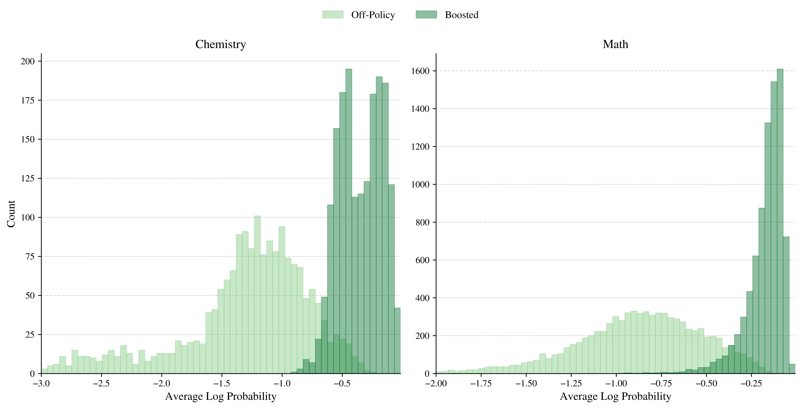

TLDR: We introduce a model-native sampling algorithm that __ off-policy data,
Abstract
Introducing new capabilities to frontier models has long been the goal of posttraining,
which predominantly employs supervised finetuning (SFT) and reinforcement learning (RL) to this end.
Conventional wisdom dictates that RL enables strong generalization on new tasks without losing existing capabilities,
while SFT is prone to weak generalization and catastrophic forgetting. At the same time, SFT enables learning from inherently
off-policy expert data, whereas RL must rely on a model's ability to generate positive signal on a new task.
In our work, we seek to leverage the strength of on-policy learning alongside the information signal of off-policy traces.
We introduce a Markov chain Monte Carlo (MCMC) sampling algorithm that progressively transforms off-policy traces to be more
on-policy given a reference model for finetuning. Across tasks like scientific skill acquisition, mathematical reasoning, and
open-ended expertise, our sampling algorithm enables SFT to generalize better and forget less than prevailing on-policy methods
for posttraining.
Moreover, the resulting finetuned models exhibit strong distributional performance and are capable of learning beyond sharpening
the base model distribution. At a higher level, our approach presents sampling as a model-native framework that aligns data with
learnability, offering broader utility as a general-purpose primitive throughout the posttraining stack.
Learning On-Policy
How do we introduce fundamentally new capabilities to a base model without forgetting existing ones?
RL has emerged as a clear favorite for posttraining, featuring strong generalization while leaving prior
abilities relatively intact. SFT, on the other hand, is widely regarded as a weak learner, memorizing instead of generalizing and exhibiting
catastrophic forgetting. Overwhelming evidence attributes this discrepancy to the observation that RL learns on-policy while SFT learns off-policy.
RL learns from rollouts generated from the learner's own distribution while SFT fits to traces that can be exceedingly different from a
typical rollout, resulting in drastic and unpredictable shifts in behavior.
Off-policy learning has one resounding advantage, however, which is the ability to leverage privileged information in constructing
target rollouts for learning. On-policy learning instead relies on the model's own ability to find successful trajectories by repeated sampling.
For truly novel tasks, though, the likelihood of this happening is effectively zero, yielding no learning signal at all. This further leaves learning
prone to distribution sharpening, where preexisting capabilities are strengthened and refined instead of new capabilities being added.
This motivates the foundational question of our work:
Can we algorithmically sample on-policy trajectories that remain faithful to privileged off-policy information for learning?
Projection Sampling
Privileged information can be formalized as an information constraint \( \mathcal{C} \) over all trajectories, where some predetermined equivalence relation
determines whether a trajectory is faithful to \( \mathcal{C} \) or not. Consider the set of all distributions \( \mathcal{P}_\mathcal{C} \)
that have support \( \mathcal{C} \). Then we want to sample from the information projection:
\[p_{\mathcal{C}}
:=
\arg\min_{\pi \in \mathcal{P}_{\mathcal{C}}}
\mathrm{KL}\!\left(
\pi
\,\middle\|\,
p
\right) \implies p_{\mathcal{C}}(\mathbf{x}) \propto p(\mathbf{x}) \cdot \mathbf{1}\bigl(\mathbf{x} \in \mathcal{C}\bigr),\]
which is the distribution closest to base model policy \(p\) that is also faithful to \( \mathcal{C} \). Of course, one way to sample
from \(p_{\mathcal{C}}\) is via rejection sampling, but this is no different from repeated sampling. Instead, we employ a neat trick based
on the Metropolis-Hastings (MCMC) algorithm that enables us to use privileged information as an "initialization" that progressively becomes more
on-policy with more MCMC steps.
Illustration of the traditional Metropolis-Hastings algorithm.
Metropolis-Hastings is an approximate sampler that iteratively updates a sample rollout \(\mathbf{x}\) by proposing an altered candidate
\(\mathbf{x'}\) with proposal distribution \(\kappa\), accepting updates with probability \(A(\mathbf{x}, \mathbf{x'})\) that depends on
\(p_{\mathcal{C}}\) via
\[A(\mathbf{x}, \mathbf{x'}) = \text{min} \left\lbrace 1, \frac{p_{\mathcal{C}}(\mathbf{x}) \cdot \kappa(\mathbf{x'} | \mathbf{x})}{p_{\mathcal{C}}(\mathbf{x'}) \cdot \kappa(\mathbf{x}|\mathbf{x'})}\right\rbrace = \text{min} \left\lbrace 1, \frac{p(\mathbf{x}) \cdot
\mathbf{1}\bigl(\mathbf{x} \in \mathcal{C}\bigr) \cdot \kappa(\mathbf{x'} | \mathbf{x})}{p(\mathbf{x'}) \cdot
\mathbf{1}\bigl(\mathbf{x'} \in \mathcal{C}\bigr) \cdot \kappa(\mathbf{x}|\mathbf{x'})}\right\rbrace = \text{min} \left\lbrace 1, \frac{p(\mathbf{x}) \cdot \kappa_{\mathcal{C}}(\mathbf{x'} | \mathbf{x})}{p(\mathbf{x'}) \cdot \kappa_{\mathcal{C}}(\mathbf{x}|\mathbf{x'})}\right\rbrace.\]
Note that we can absorb the information constraint into the proposal instead of the target distribution, allowing us to use it in-context to
generate MCMC candidates instead of using it as a trajectory-level verifier for rejection sampling.
Our algorithm, called projection sampling, only requires a reference model and off-policy data to generate a bespoke, model-native
dataset for learning. In fact, if we plot the likelihoods of the original expert traces and the corresponding
projection sampled trajectories relative to the base model, we can directly observe this likelihood-boosting effect.

Main Results
Remarkably,
the outputs generated by power sampling from the base model are on par with, if not better than, RL-posttraining on a variety
of reasoning tasks and base models. We look at MATH500, HumanEval, and GPQA Diamond as benchmarks of difficult mathematics, coding, and science questions.
We compare against a GRPO baseline (using the MATH training dataset), the poster child for RL-posttraining, as well as the original base model itself.
We also include the AlpacaEval 2.0 benchmark, a non-verifiable, general helpfulness benchmark, to demonstrate our applicability beyond the verifiable regime.
In-domain (MATH500), power sampling surprisingly is close to the performance of GRPO without ever changing the base model's weights.
Out-of-domain, power sampling can actually outperform GRPO, as demonstrated on HumanEval and AlpacaEval 2.0.
Single-shot reasoning performance of power sampling and GRPO relative to the base model for Qwen2.5-Math-7B.
Learning Beyond Sharpening
Although our boosted trajectories as measured by a deteriorated pass@\(k\)
performance (where a problem is solved if at least one of k samples is correct). While single-shot reasoning demonstrates considerable boosts, multi-shot reasoning
deteriorates: in fact, the base model pass@\(k\) performance typically exceeds that of GRPO for large enough \(k\).
Pass@\(k\) performance of power sampling and GRPO relative to the base model for Qwen2.5-Math-7B.
Unlike GRPO, power sampling maintains generation diversity and pass@\(k\) performance. Our algorithm universally outperforms
both GRPO as well as the base model on pass@\(k\) for \(k>1\), demonstrating that we are able to achieve the best of both worlds: both strong
single-shot as well as multi-shot reasoning without compromising generation diversity.
Test-Time-Scaling with MCMC Steps
The number of MCMC iterations (i.e. \(N_{\text{MCMC}}\)) presents a natural axis for scaling test time compute, where a larger number
of iterations brings the final output sequence closer to a true sample from \(p^{\alpha}\). Increasing \(N_{\text{MCMC}}\) interpolates outputs
between the base distribution \(p\) and the power distribution \(p^{\alpha}\). We can directly see how this corresponds to a gradual improvement
in reasoning ability as well:
As a result of our iterative sampling process, it turns out that the output lengths also naturally grow in size, leading to an analagous
emergence of long-form reasoning as in RL-posttraining. For example, our outputs have around the same average length as GRPO
outputs (\(\sim\) 670 tokens) on MATH500. To output a sequence of length \(T\), the average inference cost incurred by power sampling can be computed
to be \(\frac{N_{\text{MCMC}}T}{4B}\) times as many tokens as standard inference (here \(B\) denotes the block size). Using our experimental parameters for MATH500, this
amounts to a multiplier 8.84\(\times\), roughly corresponding to running one epoch of GRPO with 8 rollouts on an identically sized dataset.
In other words, our test-time-scaling strategy is practical.
Implications
The success of every single posttraining algorithm hinges on the following ability: can we find a trajectory native to the learner's distribution
that accomplishes some specification? Sampling is a way to intentionally construct such trajectories from privileged information,
establishing a general-purpose primitive for the posttraining stack, from SFT to RL to distillation.
BibTeX
@article{karan2025reasoning,
author = {Karan, Aayush and Du, Yilun},
title = {Reasoning with Sampling: Your Base Model is Smarter Than You Think},
journal = {arXiv},
year = {2025},
}